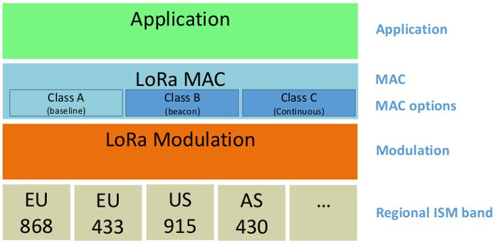
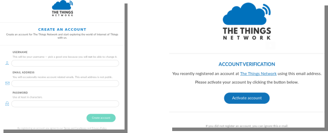

Contents
LoRaWAN communication using RIOT and TheThingsNetwork
 Level: Medium
Level: Medium
 Duration: 30 minutes
Duration: 30 minutes
Prerequisites: Configure SSH Access / Experiment CLI client
Description: The goal of this tutorial is to discover the basics of LoRaWAN communication with RIOT on IoT-LAB and TheThingsNetwork (TTN) as LoRaWAN network provider. You will start by configuring a LoRaWAN application with one device on the TTN. Then, you will book one ST B-L072Z-LRWAN1 node (known as st-lrwan1) on the Saclay site, build and flash the required lorawan firmware on the node and configure the identifiers and keys required for Over-The-Air Activation (OTAA). Finally, you will exchange messages between the node and TTN. On the SSH frontend, the messages will be retrieved by MQTT from TTN.
LoRaWAN overview
LoRaWAN is a set of protocols built on top of the LoRa radio technology. It allows nodes to send messages on long distances and with potentially
very low power consumption.
The LoRa technology uses a Chirp Spreading Spectrum frequency modulation within public radio frequency band. The access to the physical layer is regulated and depends on the region of use. On IoT-LAB, the EU868 ISM band is used by the nodes.

The LoRaWAN specifications define 3 classes of end-devices: A, B, C. Each of which has specific access to the physical layer. For more details, please refer to the LoRa specifications provided by the LoRa Alliance here
Here is a global overview of a LoRaWAN network:

End devices (e.g nodes) uses LoRa modulation to communicate with the gateways, which use the regular Internet protocols to communicate with a server, owned by a provider.
A TTN gateway is installed in the IoT-LAB Saclay site and connected to the TTN backend server. Thus, this allows LoRa nodes of the Saclay site to communicate with the TTN backend.
Configure a TTN application
Before using the LoRa nodes on IoT-LAB, you need an account and an application with a device configured on TTN.
- If you don’t already have a TTN account, create one from hereAfter submitting the account creation form, check your emails and activate the account.
- Add an application to your TTN account by following the official documentation
- Register a device in your TTN application by following this documentation. Keep the default Other-The-Air Activation (OTAA) procedure.The OTAA activation requires 3 informations:
- Device EUI: the device unique identifier is a 8 bytes array (16 hex char string)
- Application EUI: the application unique identifier is a 8 bytes array (16 hex char string)
- Application Key: the application key is a 16 bytes array (32 hex char string)
Important note: In the following instructions of this tutorial, we consider that your application name is iotlab-lorawan and your node id is iotlab-node. Replace these occurences with the information you configured in your TTN account.
Book and configure the LoRa node
In this section, you will submit an experiment with one LoRa node on IoT-LAB, flash a RIOT firmware for LoRaWAN and connect the node to your application in the TTN network.
- Connect to the Saclay site host:
my_computer$ ssh <login>@saclay.iot-lab.info
- Start an experiment with 1 node called
riot_ttn<login>@saclay:~$ iotlab-auth -u <login> <login>@saclay:~$ iotlab-experiment submit -n riot_ttn -d 60 -l 1,archi=st-lrwan1:sx1276+site=saclay
Remember the experiment identifier returned by the last command. It’ll be used in the commands shown below,
<exp_id>. The requested experiment duration is 60 minutes. - Wait a moment until the experiment is launched (state is Running) and get the nodes list. For the next steps of this tutorial we suppose that you obtained st-lrwan1-1.saclay.iot-lab.info
<login>@saclay:~$ iotlab-experiment get -i <exp_id> -s <login>@saclay:~$ iotlab-experiment get -i <exp_id> -r
- Get the code of the 2019.01 release of RIOT from GitHub:
<login>@saclay:~$ git clone https://github.com/RIOT-OS/RIOT.git -b 2019.01-branch <login>@saclay:~$ cd RIOT
Note: you can also use the RIOT development code (e.g the master branch) but this will be at your own risk: this tutorial may not fully work.
- Important: RIOT doesn’t support the arm gcc version installed by default on the SSH frontend, e.g. 4.9. So we provide arm gcc 7.2 in
/opt/gcc-arm-none-eabi-7-2017-q4-major. Use the following command to use gcc 7.2 by default:<login>@saclay:~/RIOT/$ export PATH=/opt/gcc-arm-none-eabi-7-2017-q4-major/bin:$PATH
Verify that you have the right gcc version:
<login>@saclay:~/RIOT/$ arm-none-eabi-gcc --version arm-none-eabi-gcc (GNU Tools for Arm Embedded Processors 7-2017-q4-major) 7.2.1 20170904 (release) [ARM/embedded-7-branch revision 255204] Copyright (C) 2017 Free Software Foundation, Inc. This is free software; see the source for copying conditions. There is NO warranty; not even for MERCHANTABILITY or FITNESS FOR A PARTICULAR PURPOSE.
- Build the LoRaWAN test application provided by RIOT.
<login>@saclay:~/RIOT/$ make -C tests/pkg_semtech-loramac clean all
- Use the CLI-Tools to flash the ST LoRa node with the LoRaWAN firmware that you have just built. Here we use st-lrwan1-1 but it may change in your case:
<login>@saclay:~/RIOT/$ iotlab-node --update tests/pkg_semtech-loramac/bin/b-l072z-lrwan1/tests_pkg_semtech-loramac.elf -l saclay,st-lrwan1,1
- You can now access the RIOT shell running on your node using netcat:
<login>@saclay:~/RIOT/$ nc st-lrwan1-1 20000
- The shell provides the
loramaccommand to interact with the LoRaWAN stack running on the node:> help help Command Description --------------------------------------- loramac control the loramac stack reboot Reboot the node random_init initializes the PRNG random_get returns 32 bit of pseudo randomness > loramac loramac Usage: loramac <get|set|join|tx>
- Now find the Device EUI, Application EUI and Application key information in the
Overviewtab of theiotlab-nodedevice on the TTN web console.Then set them to the RIOT firmware (replace the values with yours):> loramac set deveui 00000000000000 > loramac set appeui 00000000000000 > loramac set appkey 0000000000000000000000000000
You can also set a fast datarate, e.g. 5, corresponding to a bandwidth of 125kHz and a spreading factor of 7, since the nodes are very close to the gateway:
> loramac set dr 5
- Now that the node has the required information set, it is time to join it to the network using the OTAA
> loramac join otaa Join procedure succeeded!
On the TTN web console, go to the
Datatab of theiotlab-nodepage. You should see the activation message received by the TTN backend (the item is clickable). - Use the
txsubcommand to send a payload to the backend:> loramac tx HelloWorld! TX done
Still in the
Datatab of theiotlab-nodeweb page, you should see the message received by the TTN backend. - Send a downlink message from the
Overviewtab of theiotlab-node(for example use the following hexadecimal values:48656C6C6F52494F5421Note: Nothing is received by the node because a LoRaWAN class A device (the default for a RIOT LoRaWAN node) only have a short RX window after a send.In order to receive the downlink message, just send another message to TTN:> loramac tx HelloWorld! Data received: HelloRIOT!, port: 1
You have send and received LoRaWAN messages using RIOT on IoT-LAB, congratulations !
Exchange messages using MQTT protocol
TTN also provides a MQTT API for receiving and sending messages to the end-devices. Using the mosquitto-clients tools from the SSH frontend (or your computer), it is possible to interact with the nodes.
Warning: the mosquitto commands given here are not secure since the username and password are sent clear on the network. Consider using the TLS secure authentication explained in the TTN documentation for a more secure setup.
- In a second terminal, from the ssh frontend, subscribe to the messages sent by the end-devices using
mosquitto_sub. Replace<username>by your application name (here we use iotlab-lorawan) and<password>by your application access key (available at the bottom of the TTN application management page).my_computer$ ssh <login>@saclay.iot-lab.info <login>@saclay:~/RIOT/$ mosquitto_sub -h eu.thethings.network -p 1883 -u <username> -P <password> -t '+/devices/+/up'
Keep the
mosquitto_subrunning in the second terminal and from the first terminal, send a message from the LoRa node:> loramac tx HelloWorld!
The
mosquitto_subshould display the following output:{"app_id":"iotlab","dev_id":"iotlab-node","hardware_serial":"0000000000000000","port":2,"counter":2,"confirmed":true,"payload_raw":"SGVsbG9Xb3JsZCE=","metadata":{"time":"2018-03-20T14:48:54.615245849Z","frequency":868.5,"modulation":"LORA","data_rate":"SF12BW125","airtime":1482752000,"coding_rate":"4/5","gateways":[{"gtw_id":"iotlab-ttn-gateway","gtw_trusted":true,"timestamp":2385561636,"time":"2018-03-20T14:48:55Z","channel":2,"rssi":-65,"snr":9,"rf_chain":1,"latitude":48.715076,"longitude":2.2059286,"altitude":157,"location_source":"registry"}]}}The payload is available in the
payload_rawfield of the json output but is encoded in base64. You need to decode it using thebase64command.<login>@saclay:~/RIOT/$ base64 -d <<< SGVsbG9Xb3JsZCE=
- Now publish messages to the node using the following command (replace iotlab-lorawan and iotlab-node with your corresponding values):
<login>@saclay:~/RIOT/$ mosquitto_pub -h eu.thethings.network -p 1883 -u <username> -P <password> -t 'iotlab-lorawan/devices/iotlab-node/down' -m '{"port":2, "payload_raw":"VGhpcyBpcyBSSU9UIQ=="}'Then send another message from the node, you should see the following output:
> loramac tx HelloWorld! Data received: This is RIOT!, port: 2
Congratulations, you have completed the LoRaWAN tutorial !